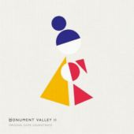

- # ?-0007
- Format: MP3
- Genre: Soundtracks
- Bitrate: 320 Kbps
- Duration: 0:00
- Impossible Worlds Todd Baker 2:55
- Mother & Child Todd Baker 2:29
- Interwoven Stories Todd Baker 3:18
- Ro in the Valley Todd Baker 1:21
- Gamelan Rain Melody Todd Baker 4:38
- Mother's Pledge Todd Baker 1:39
- The Archipelago Todd Baker 2:50
- Lessons & Learnings Todd Baker 2:34
- Departure Todd Baker 1:59
- A Friend, Pt. 1 Todd Baker 3:37
- An Emptiness Todd Baker 2:18
- Greyscale: Colour Todd Baker 2:31
- A Full Life Todd Baker 2:32
- A Friend, Pt. 2 Todd Baker 3:26
- Mln-An-Tol
- First Steps Todd Baker 1:08
- Child Todd Baker 3:11
- Child's Pledge Todd Baker 1:16
- The Orchard Todd Baker 3:10
- All Grown Up Todd Baker 2:56
- Reunion Todd Baker 1:02
- Power of Two Todd Baker 3:15
- Night & Day & Night Todd Baker 2:48
- Mirador Todd Baker 3:24
- A Warm Ascent Todd Baker 3:05
- Child (Live) Todd Baker & Lydian Collective 4:25